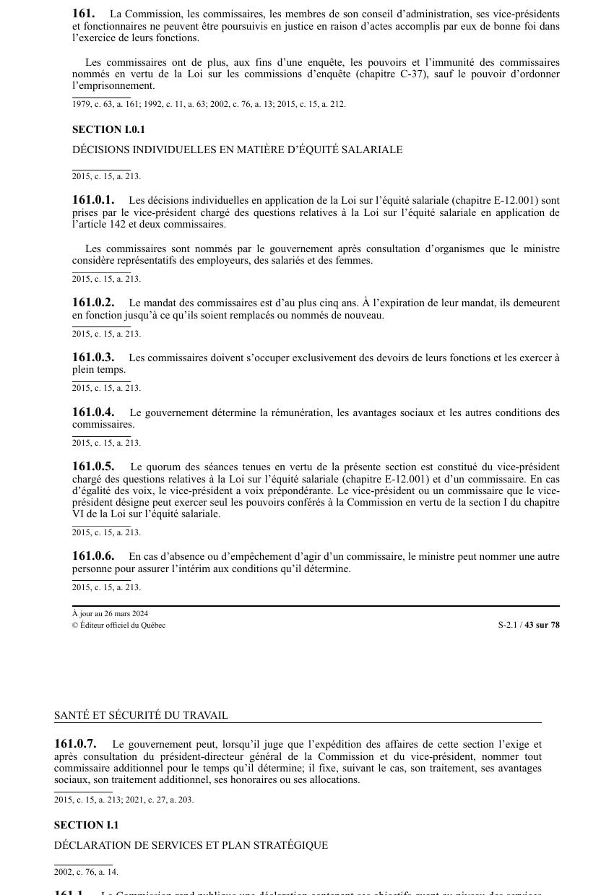

art-161-LSST : immunité Commission et membres
Un article du wiki ⚖️ Recueil législatif
🌐 LegisQuébec · 📄 PDF officiel (page 43)
Texte officiel : capture du PDF

🔗 Ouvrir a cette page : LSST.pdf : page 43 · texte a jour au 26 mars 2024
En bref
La Commission, les commissaires, les membres de son conseil d'administration. Il s'agit d'une obligation.
- Actes accomplis de bonne foi dans l'exercice des fonctions.
Voir aussi
- art. 159 : décision signée équivalant à séance · une décision du conseil d'administration ou du comité administratif signée par tous les membres a la même valeur que si elle a été prise en séance ordinaire.
- art. 160 : pouvoir d'enquête de la Commission · définition : pour l'exercice de ses pouvoirs, la Commission ou une personne qu'elle désigne peut enquêter sur toute matière de sa compétence et est investie des pouvoirs et de l'immunité des commissaires d'enquête, sauf celui d'imposer l'emprisonnement.
- art. 161.1 : déclaration de services aux clients · la Commission rend publique une déclaration contenant ses objectifs quant au niveau des services offerts et quant à la qualité de ses services, portant notamment sur la diligence et l'accessibilité de ces services.
- art. 161.2 : obligations envers la clientèle · obligation : la Commission doit s'assurer de connaître les attentes de sa clientèle, simplifier les règles et procédures régissant la prestation de services, et développer chez son personnel le souci de dispenser des services de qualité.
- ↑ Loi : LSST
Pages qui pointent ici (6)
- art-159-LSST, décision conseil administration ou Recueil législatif
- art-160-LSST, homologation équipement Recueil législatif
- art-161.1-LSST, formation Recueil législatif
- art-161.2-LSST, Commission Recueil législatif
- Infractions et sanctions Droit du travail
- LSST - Chapitre VII - Inspecteur de la CNESST et révision Recueil législatif